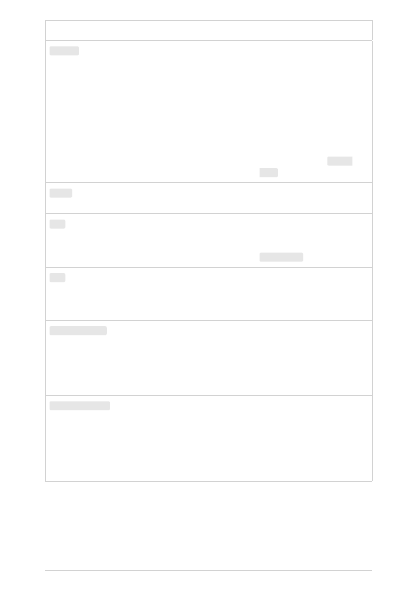

Parameter
Type
Required? Default
Description
logprobs
integer
Optional
null
Include the log probabilities on
the logprobs most likely tokens,
as well the chosen tokens. For
example, if logprobs is 10, the
API will return a list of the 10
most likely tokens. the API will
always return the logprob of the
sampled token, so there may be
up to logprobs+1 elements in
the response. This parameter
cannot be used with gpt-35-
turbo
.
suffix
string
Optional
null
The suffix that comes after a
completion of inserted text.
echo
boolean Optional
False
Echo back the prompt in
addition to the completion. This
parameter cannot be used with
gpt-35-turbo
.
stop
string
or array
Optional
null
Up to four sequences where the
API will stop generating further
tokens. The returned text won't
contain the stop sequence.
presence_penalty
number
Optional
0
Number between -2.0 and 2.0.
Positive values penalize new
tokens based on whether they
appear in the text so far,
increasing the model's likelihood
to talk about new topics.
frequency_penalty
number
Optional
0
Number between -2.0 and 2.0.
Positive values penalize new
tokens based on their existing
frequency in the text so far,
decreasing the model's
likelihood to repeat the same
line verbatim.